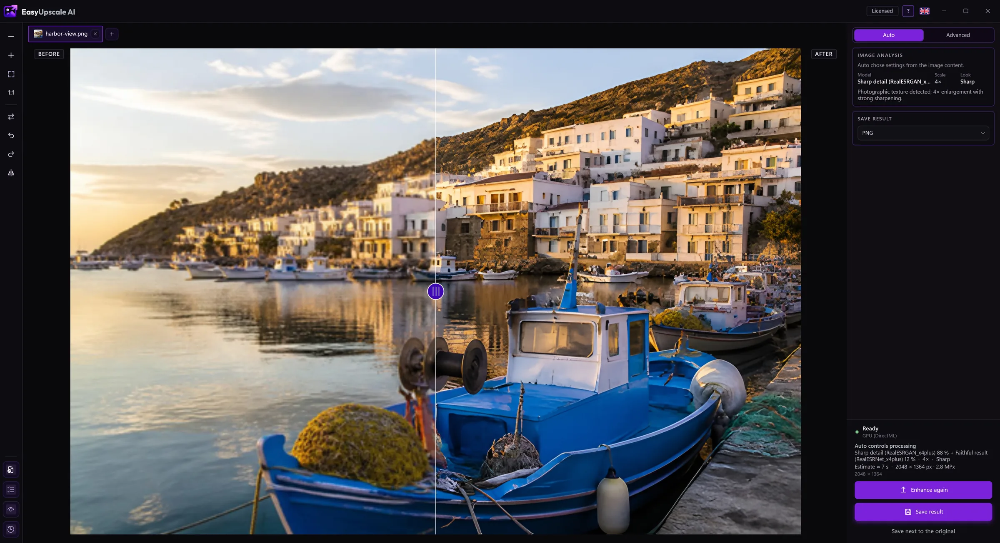

Need a sharper image?
A blurry or soft photo can often be improved. EasyUpscale AI enlarges and sharpens it with AI that runs on your own PC. Nothing is uploaded.

Download free for Windows · Buy a license · €14.99
How to do it
- Open the picture in EasyUpscale AI.
- Click Enhance image. Auto mode recognizes whether it is a photo, a drawing, text or a damaged shot and picks a suitable model.
- Check the result with the before and after slider and save it as PNG or JPEG.
What to expect
- Enlarging 2× is free, with no watermark. A one-time license of €14.99 (no subscription) adds 4× enlarging, Advanced mode, batches and more formats.
- AI can add plausible fine detail, but it cannot bring back what is not in the photo. A heavily blurred or motion-blurred shot gets better, but do not expect miracles.
- After processing you can fine-tune sharpness and noise smoothing so the result does not look overworked.
Why offline
- Your photos never leave your computer.
- No credits per picture, no queue.
- Works on NVIDIA, AMD and Intel graphics cards (DirectX 12).